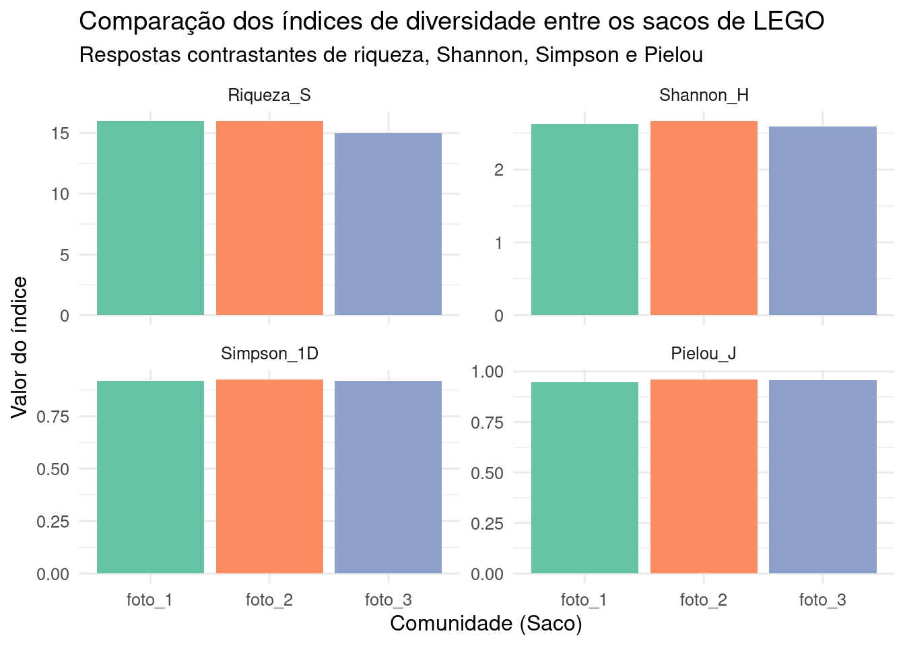

Módulo 2- Medidas clássicas de diversidade em ecologia de comunidades
Análise prática de Shannon, Simpson e Pielou
1 Apresentação do módulo
Neste segundo módulo, continuamos utilizando a simulação tátil com 100 peças de LEGO por grupo como modelo de comunidades biológicas. No Módulo 1, exploramos a riqueza de espécies (\(S\)), as distribuições de abundância relativa (SADs/RADs) e a amostragem sequencial. Agora, estendemos nossa análise para quantificar a diversidade alfa (\(\alpha\)) por meio dos três índices clássicos mais difundidos na ecologia:
Índice de Shannon-Wiener (\(H'\)): fundamentado na teoria da informação.
Índice de Simpson (\(D\), \(1-D\), \(1/D\)): fundamentado na probabilidade de intersubjetividade e dominância.
Equitabilidade de Pielou (\(J'\)): proporção da diversidade máxima teórica.
1.1 Definições do modelo no Módulo 2
Espécie = Cor da peça de LEGO (por exemplo: peça vermelha = Espécie A, amarela = Espécie B).
Indivíduo = Cada peça física de LEGO.
Forma e tamanho das peças: mantêm-se desconsiderados neste módulo (serão incorporados como traços funcionais no Módulo 3).
2 Demonstrativo prático de sala (Hands-on)
Cada grupo de alunos utilizará o seu saco de 100 peças montado previamente para realizar o protocolo de organização e estimativa da incerteza e da dominância antes de iniciar o processamento dos dados no R.
3 Exercício aplicado no R (vegan)
3.1 Pacotes necessários
Code
# ---------------------------------------------------------------------# 1. INSTALAÇÃO E CARREGAMENTO DOS PACOTES# ---------------------------------------------------------------------# Pacotes que vamos usar:# tidyverse -> manipulação de dados (dplyr, tidyr, readr) e gráficos (ggplot2)# vegan -> análises de ecologia de comunidadespacotes <-c("tidyverse", "vegan")# Instala apenas os pacotes que ainda NÃO estão instaladosfor (p in pacotes) {if (!requireNamespace(p, quietly =TRUE)) {install.packages(p) }}# Carrega os pacotes (precisa fazer isso toda vez que abrir o R)library(tidyverse)library(vegan)
3.2 1. Carregando os dados
Code
dados <-read_csv("~/eco_com/exercises/ex1/contagem_pecas_lego.csv") # Note que os dados devem estar salvos na mesma pasta que este arquivo ou você precisa usar o caminho específico
Rows: 16 Columns: 4
── Column specification ────────────────────────────────────────────────────────
Delimiter: ","
chr (1): cor
dbl (3): foto_1, foto_2, foto_3
ℹ Use `spec()` to retrieve the full column specification for this data.
ℹ Specify the column types or set `show_col_types = FALSE` to quiet this message.
Code
# Olhe os dados: sempre confira se foram lidos corretamenteprint(dados)
# ---------------------------------------------------------------------# Os pacotes de ecologia (vegan) esperam uma matriz de comunidade:# LINHAS = comunidades (aqui, as fotos)# COLUNAS = espécies (aqui, as cores)# Nosso CSV está no formato inverso, então precisamos "girar" a tabela.dados_longo <- dados %>%pivot_longer(cols =-cor, # todas as colunas, menos "cor"names_to ="comunidade", # nomes das colunas viram a variável "comunidade"values_to ="abundancia"# os números viram a variável "abundancia" )print(dados_longo)
Utilizaremos as funções do pacote vegan para extrair a riqueza observada (\(S\)), o índice de Shannon-Wiener (\(H'\)), a dominância de Simpson (\(D\)), a diversidade de Simpson (\(1-D\)), o inverso de Simpson (\(1/D\)) e a equitabilidade de Pielou (\(J'\)).
Code
library(tidyverse)library(vegan)# Isolamento da matriz numérica de contagensmat_num <- matriz_lego %>%select(-comunidade)rownames(mat_num) <- matriz_lego$comunidade# 1. Riqueza observada (S)S_obs <-specnumber(mat_num)# 2. Índice de Shannon-Wiener (H')H_shannon <-diversity(mat_num, index ="shannon")# 3. Dominância de Simpson (D)D_puro <-rowSums((mat_num /rowSums(mat_num))^2)# 4. Diversidade de Simpson (1 - D)Simp_div <-1- D_puro# 5. Inverso de Simpson (1 / D)Simp_inv <-1/ D_puro# 6. Diversidade máxima teórica de Shannon (H_max = ln(S))H_max <-log(S_obs)# 7. Equitabilidade de Pielou (J' = H' / ln(S))J_pielou <- H_shannon / H_max# Consolidação da tabela de resultadostabela_diversidade <-data.frame(Comunidade =rownames(mat_num),N_Total =rowSums(mat_num),Riqueza_S = S_obs,Shannon_H =round(H_shannon, 3),Simpson_D =round(D_puro, 3),Simpson_1D =round(Simp_div, 3),Simpson_Inv =round(Simp_inv, 2),Pielou_J =round(J_pielou, 3))knitr::kable(tabela_diversidade, caption ="Tabela comparativa dos índices clássicos de diversidade entre os 4 sacos de LEGO")
Tabela comparativa dos índices clássicos de diversidade entre os 4 sacos de LEGO
Comunidade
N_Total
Riqueza_S
Shannon_H
Simpson_D
Simpson_1D
Simpson_Inv
Pielou_J
foto_1
foto_1
43
16
2.629
0.080
0.920
12.58
0.948
foto_2
foto_2
62
16
2.666
0.074
0.926
13.44
0.961
foto_3
foto_3
52
15
2.590
0.081
0.919
12.29
0.956
3.7 Visualização gráfica dos índices comparados
Para visualizar como cada índice reage às diferentes estruturas de comunidade, construímos um gráfico comparativo utilizando o pacote ggplot2.
Code
# Reorganização dos dados para formato longo (tidy)df_grafico <- tabela_diversidade %>%pivot_longer(cols =c("Riqueza_S", "Shannon_H", "Simpson_1D", "Pielou_J"),names_to ="Indice",values_to ="Valor" ) %>%mutate(Indice =factor(Indice, levels =c("Riqueza_S", "Shannon_H", "Simpson_1D", "Pielou_J")))# Gráfico de barras facetadoggplot(df_grafico, aes(x = Comunidade, y = Valor, fill = Comunidade)) +geom_col(show.legend =FALSE) +facet_wrap(~ Indice, scales ="free_y", ncol =2) +scale_fill_brewer(palette ="Set2") +theme_minimal(base_size =12) +labs(title ="Comparação dos índices de diversidade entre os sacos de LEGO",subtitle ="Respostas contrastantes de riqueza, Shannon, Simpson e Pielou",x ="Comunidade (Saco)",y ="Valor do índice" )

Aqui está o bloco formatado em Quarto Markdown (.qmd) com o layout estruturado (incluindo o callout visual do Quarto, caixa baixa nos cabeçalhos e negritos pontuais) para você utilizar diretamente no seu documento:
4 instruções para uso do próprio arquivo .csv no exercício
nesta etapa do exercício, você deixará de utilizar a matriz simulada e aplicará todas as análises aos dados reais coletados pelo seu grupo no módulo 1.
Note📋 orientações para análise dos dados do seu grupo
localização do arquivo .csv
certifique-se de que o arquivo contendo a contagem de peças por cor do seu grupo (por exemplo, dados_lego_grupo.csv) esteja salvo no mesmo diretório do seu projeto no rstudio. a tabela deve manter a estrutura padrão: colunas representando as espécies (cores) e a linha representando a amostragem da comunidade.
importação dos dados para o r
carregue a sua planilha no ambiente do r utilizando a função de leitura adequada (read.csv() ou read_csv() do pacote readr).
reaproveitamento dos códigos do exercício
você não precisa reescrever os scripts do zero. copie e cole os blocos de código demonstrativos deste módulo e adapte apenas o nome do objeto da matriz de entrada, substituindo mat_num pelo nome do seu objeto de dados importado.
cálculo e consolidação dos índices
execute os comandos do pacote vegan para extrair a riqueza observada (\(S\)), o índice de shannon-wiener (\(H’\)), o índice de simpson (\(1-D\) e \(1/D\)) e a equitabilidade de pielou (\(J’\)) da comunidade do seu grupo.
comparação e classificação do perfil ecológico
compare os resultados obtidos para o seu grupo com os quatro sacos de referência (sacos a, b, c e d). identifique se a sua comunidade se aproxima de um perfil de hiperdominância (saco a), distribuição log-normal típica (saco b), equitabilidade perfeita (saco c) ou com grande proporção de espécies raras (saco d).
5 Perguntas de interpretação ecológica
Responda às seguintes questões com base nos resultados quantitativos obtidos na tabela e nos gráficos acima:
Divergência entre Shannon e Simpson: Compare os resultados do Saco C (equitativo) e do Saco D (muitas espécies raras). Qual deles apresentou o maior valor de Shannon (\(H'\)) e qual apresentou o maior valor de Simpson (\(1-D\))? Explique por que esses dois índices ranquearam esses dois sacos de maneira diferente com base nas suas fórmulas matemáticas.
Sensibilidade à dominância: No Saco A, o valor de Shannon foi de \(H' = 1,027\), enquanto o valor de Simpson (\(1-D\)) foi de \(0,480\). O que a diferença na magnitude desses dois valores revela sobre a presença de espécies hiperdominantes na comunidade?
Interpretando a Equitabilidade de Pielou (\(J'\)): O Saco B possui riqueza \(S = 8\) e o Saco C possui riqueza \(S = 10\). Por que a equitabilidade de Pielou do Saco C é exatamente \(1,0\), enquanto a do Saco B é menor? O que o índice de Pielou mede que a riqueza pura não consegue detectar?
Inverso de Simpson (\(1/D\)) como “Número de espécies abundantes”: O valor do Inverso de Simpson para o Saco A foi próximo de \(1,92\), enquanto para o Saco C foi exatamente \(10,0\). Qual é a interpretação ecológica de expressar o índice de Simpson na sua forma inversa (\(1/D\))?
Aplicações e limitações em monitoramento ambiental: Imagine que uma área florestal nativa (semelhante ao Saco B) sofre uma perturbação e passa a ser dominada por uma espécie exótica invasora (tornando-se semelhante ao Saco A). Qual dos índices (\(H'\), \(1-D\) ou \(J'\)) seria mais rápido e sensível para alertar os gestores ambientais sobre essa perda de qualidade ecológica antes que ocorra a extinção de espécies raras? Justifique.